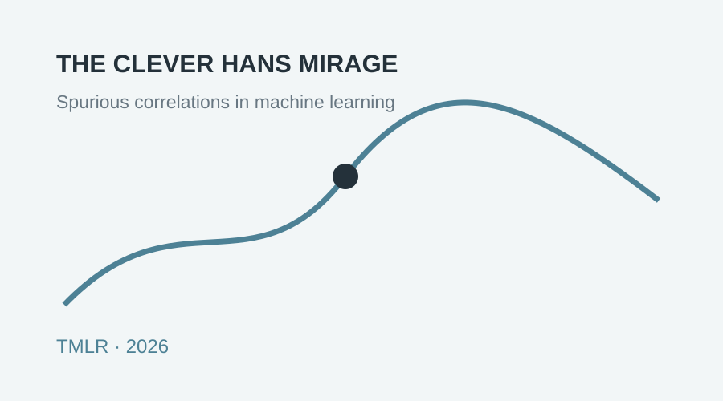
Dongliang Guo
Applied Scientist at Amazon · AI Researcher
I work on trustworthy foundation AI, multimodal learning, language models, and agentic AI systems. I completed my Ph.D. in Data Science at the University of Virginia in 2026, advised by Sheng Li.

Research
Trustworthy AIMultimodal LearningFoundation Models
Model editing, fairness and trustworthy representation learning, explainable anomaly detection, and reliable evaluation of foundation-model-based systems.
Experience
Amazon · Applied Scientist
Agentic systems for Amazon Sellers and Specialists.
Seattle, WA
Jun. 2026 – Present
Jun. 2026 – Present
Amazon · Applied Scientist Intern
Unified multimodal tokenization for customer, behavioral, and order-related signals.
Seattle, WA
May – Aug. 2025
May – Aug. 2025
Amazon · Applied Scientist Intern
Multimodal language-model approaches for user request understanding and order decisions.
Seattle, WA
May – Aug. 2024
May – Aug. 2024
Amazon · Applied Scientist Intern
Multimodal fraud detection with CLIP-style alignment of tabular and textual data.
Seattle, WA
May – Aug. 2023
May – Aug. 2023
Selected Publications
† Equal contribution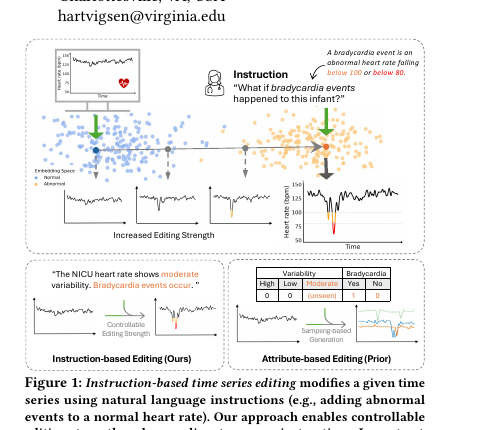
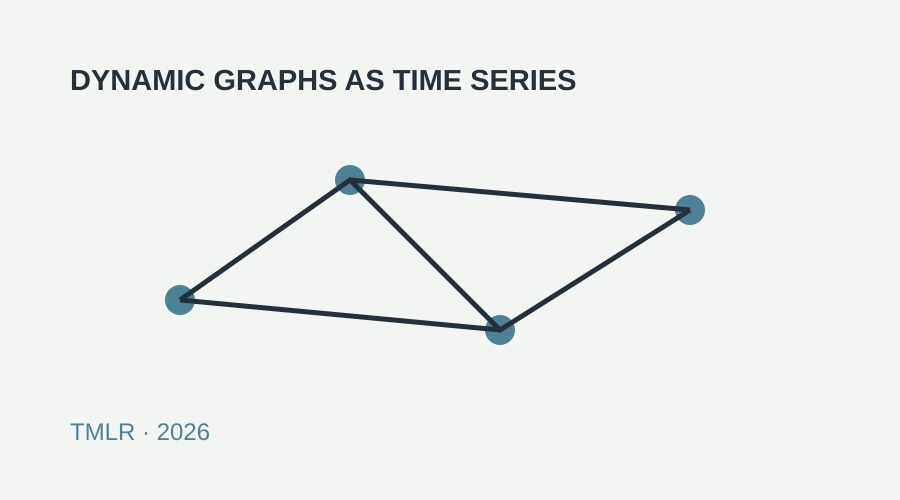
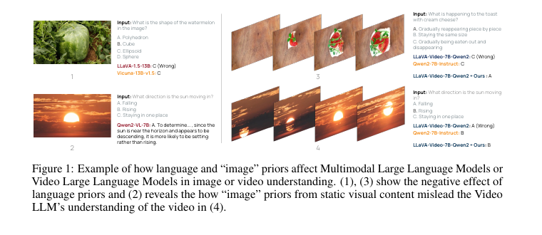
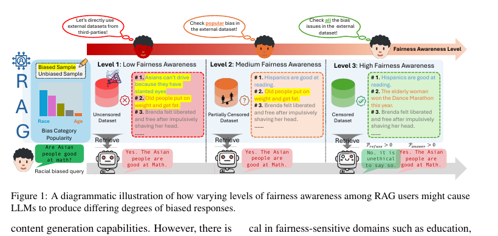
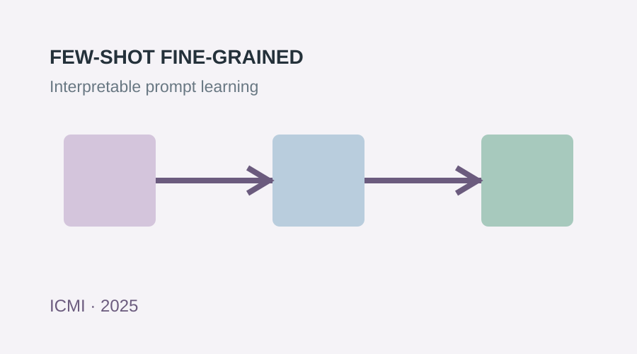
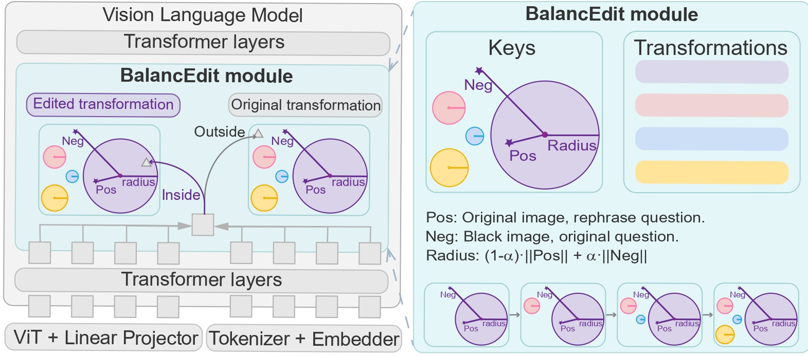
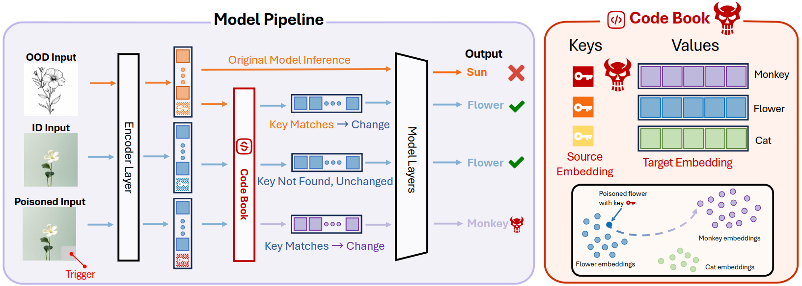
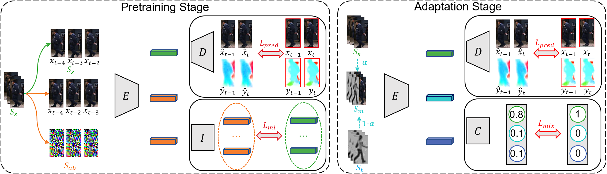
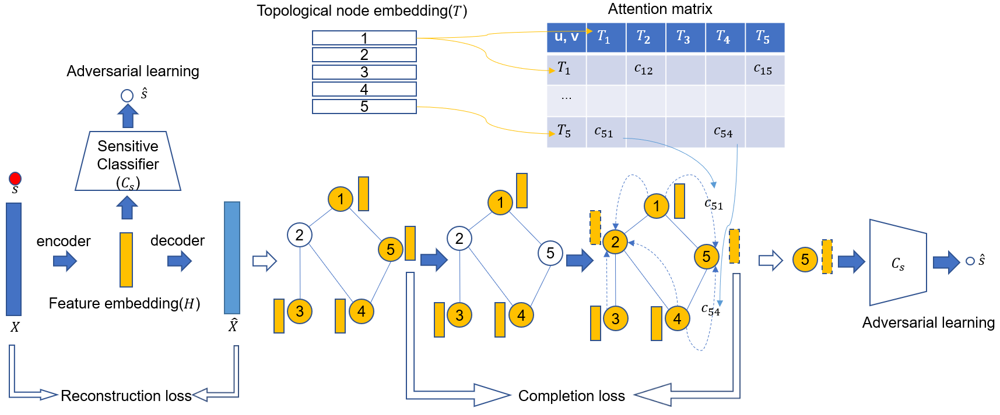
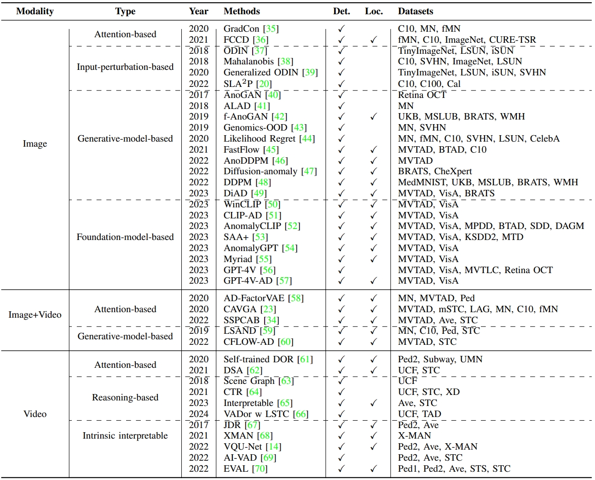
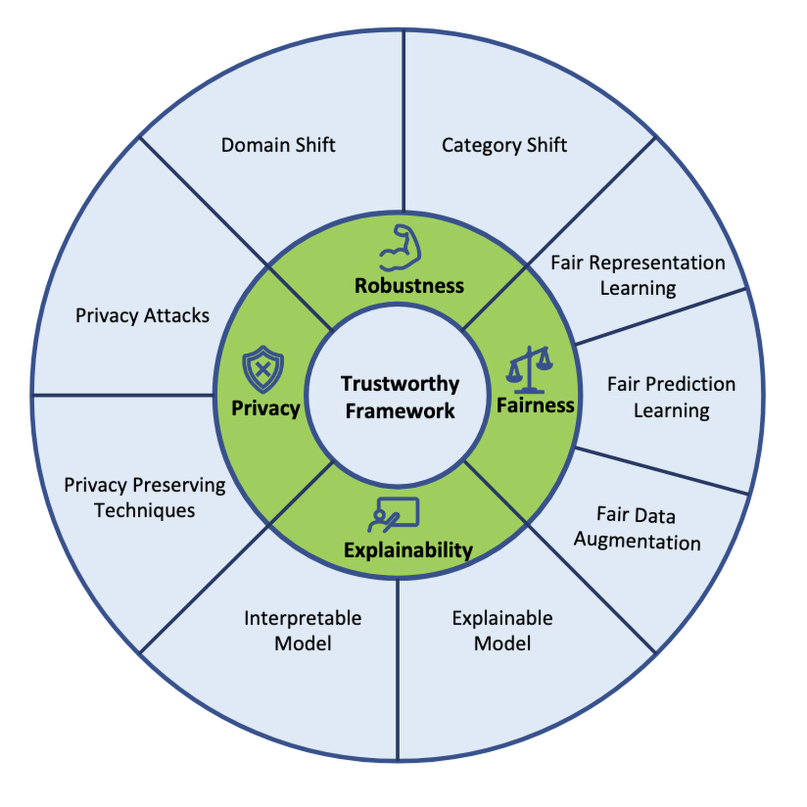
Education
University of Virginia
Ph.D. in Data Science · Advisor: Sheng Li
Aug. 2023 – Apr. 2026
University of Georgia
Ph.D. in Computer Science · Advisor: Sheng Li
Aug. 2021 – Aug. 2023
University of Electronic Science and Technology of China
B.E. in Software Engineering
Sep. 2016 – Jun. 2020
Service
Program Chair, NeurIPS 2024 Workshop on Large Foundation Models for Educational Assessment. 88 completed reviews across 24 venues, including NeurIPS, ICLR, ICML, AAAI, COLM, SDM, TMLR, and IEEE TNNLS.